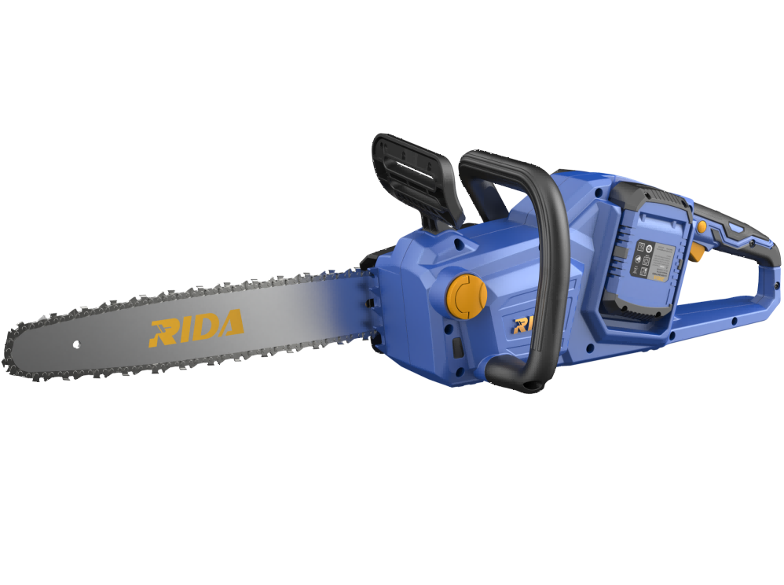

RIDA
Kit Motosserra V016
Kit de motosserra sem fio RIDA para poda e corte de madeira, com baterias incluídas.
Voltage40V(2*20V)
Bar Length16" (400mm)
Chain Pitch3/8"
Chain Speed19m/s
Oil Tank Volume160ml
Include

Kit de motosserra sem fio RIDA para poda e corte de madeira, com baterias incluídas.